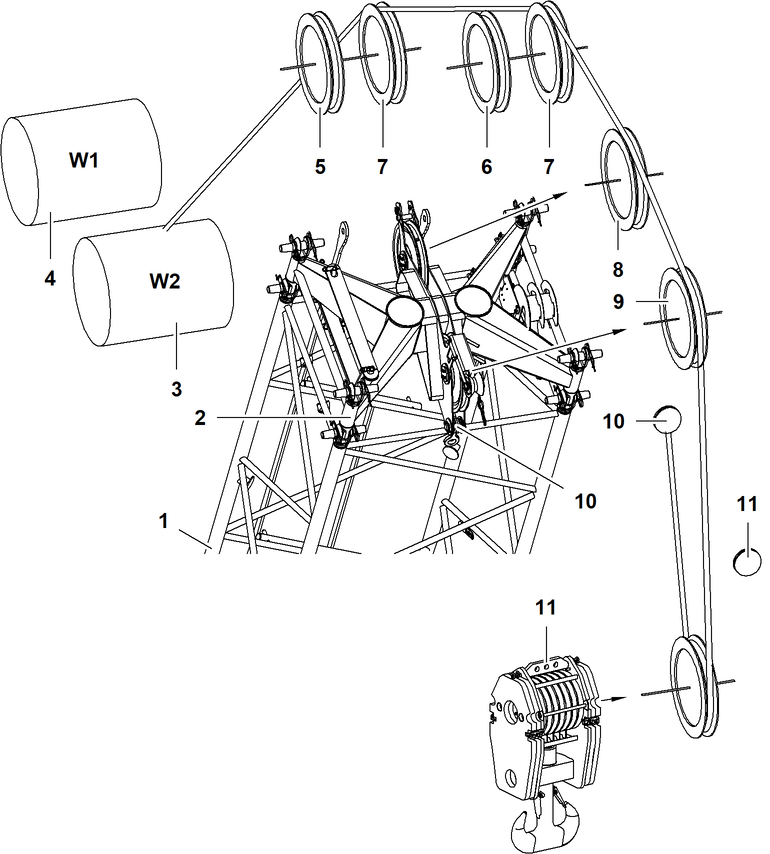

ID_03dfc2833fd94b9aaba2f40928b9a262-9683fbb5d33d500c0a1e9aa53a72ca84-de-DE.html
true
Einscherpläne für ein Seil über Midfall 1916

Fig. 5759: Einscherpläne für ein Seil über Midfall 1916
Fig. 5759: Einscherpläne für ein Seil über Midfall 1916
Nadelausleger | |
Midfall | |
Winde2 | |
Winde1 | |
Seilrolle des A-Bock2 | |
Seilrolle des A-Bock3 | |
Nachrüstsatz* für Betrieb mit zwei Seilen über Nadelausleger-Kopf | |
Obere Seilrolle des Midfall | |
Untere Seilrolle des Midfall | |
Seilfixpunkt des Midfall | |
Seilfixpunkte der Unterflasche |

GEFAHR
Unzulässige Anzahl der Einscherungen!
Versagen der Struktur, Kippen der Maschine.
Zulässige Anzahl der Einscherungen laut Traglasttabelle wählen. |
Einscherpläne für ein Seil über Midfall 1916 | |
|---|---|
2x | 1x |
Einscherpläne für ein Seil über Midfall 1916